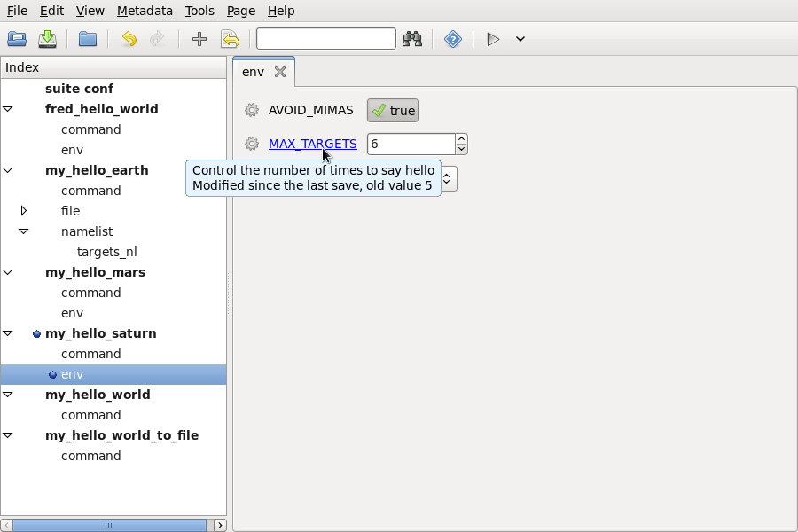
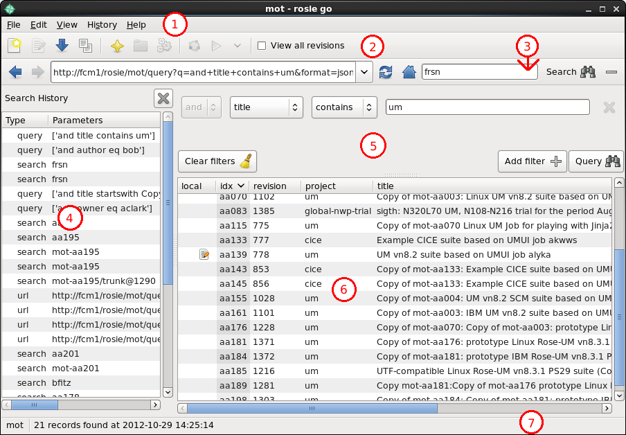

This document is released under the Open Government Licence.
Why am I here? What's Rose?
What's the point of the guide?
Help! I can't use it!
S5
slideshow or single page links.What does this part cover?
Rose aims to make the interface of scientific suites and applications:
Rose:
Rose:
Rose:
Rose:

A suite:
A suite is a directory with some files and sub-directories.
The directory can be version controlled.
The suite directory contains:
suite.rc file, for configuring cylcrose-suite.conf file, for configuring variables used
in the suite.rc file and installing static resourcesrose-suite.info file, for describing the suiteapp/ directory, containing Rose applicationssuite.rc file that lives in
the top directory of a Rose suite.What's so special about cylc? Couldn't I just use a cron job?
This is the cylc control/monitoring GUI.

How cylc runs a suite.
(Demo) - if this isn't part of a course, skip to the next section
(Otherwise known as an app config)
An app config:
An app config:
A Rose app config is a directory.
The directory contains:
rose-app.conf file, for configuring which executable
to run, the environment, and configuring some of the input files like
namelists.file/ directory, for storing other input
files.It may also contain other sub-directories such as bin/,
meta/ and opt/.
Here's an example of a rose-app.conf file:
[command] default=hello.exe [env] SUBJECT=world [file:hello_nl] source=namelist:hello [namelist:hello] l_exclamation_mark=.true.
When Rose runs the app, it will create a file hello_nl that looks like this:
&hello l_exclamation_mark=.true., /
and run the executable hello.exe with the environment variable SUBJECT set to world.
App configs can have metadata.
Suites can also have metadata, but we'll cover this later.
Metadata is:
Metadata sometimes lives in the meta/ directory of an app
config, but more often in a shared central location.
You'll be looking at metadata in the Metadata Tutorial later.
The config editor is the Rose app config and suite editing GUI.
Its input panels are automatically generated from the content in your suite and app configs, and it uses metadata to improve presentation, add help, and do some checking.
This example image shows getting hover-over help for an app config setting in the config editor.
"Rosie" is the optional part of Rose that handles suite storage and discovery. It uses Subversion and a web-accessed database to version control and keep track of suites.
Each suite is an FCM project with a trunk and branches. Working on a suite is like working on source code.
Suites are identified using an abstract ID like niwa1-aa007 or kma3-ef432. Specific branches and revisions of suites would be identified using the syntax ID/branch@revision e.g. mo1-aa007/trunk@20.
To make finding (and remembering) suite IDs easier, each suite has a
rose-suite.info file that describes the suite.
These usually look a bit like this:
access-list=bob helen mary issue-list=nasa:#2231 boeing:#4076 owner=fred project=apollo title=SV-1 experiment
These properties are stored in a database that is queried using Rosie utilities.
This is the rosie go GUI for managing your
Rose suites (e.g. finding, copying, checking out suites). Not an FCM
GUI!
1) Menu 2) Address bar 3) Search 4) Search History 5) Advanced Search 6) Search Results 7) Statusbar
Next Steps: